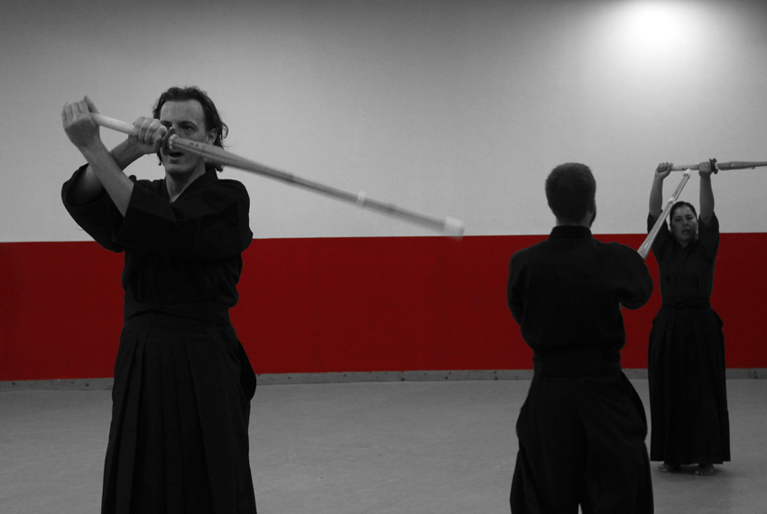
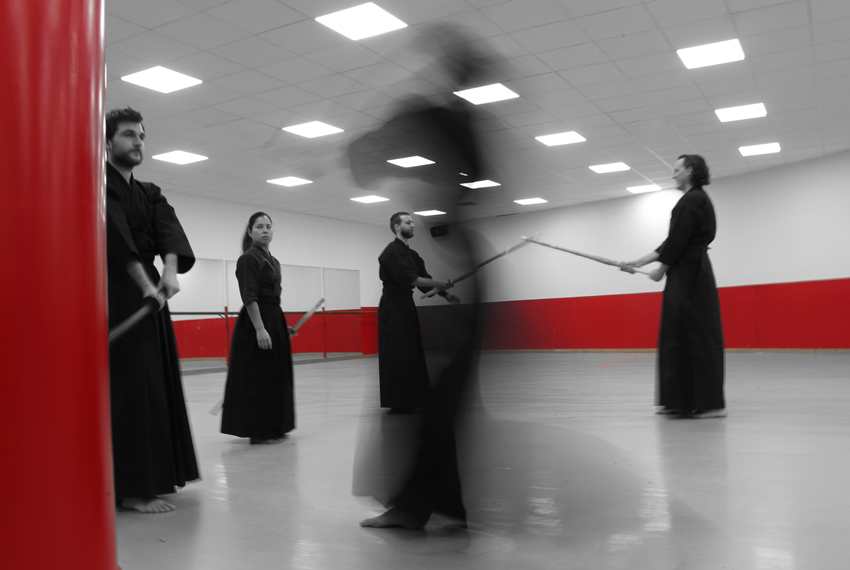
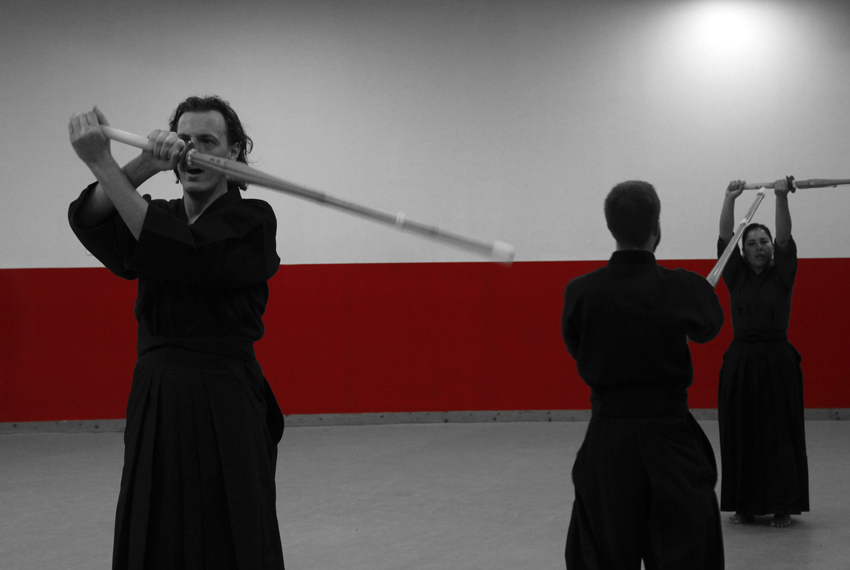
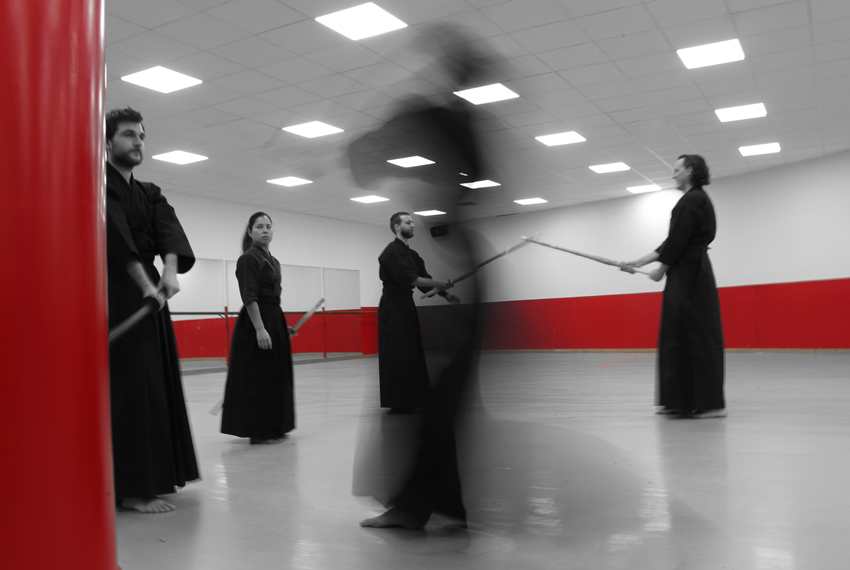

Étant moi même judoka depuis mon plus jeune âge, je suis sensible aux arts martiaux.
J'ai contacté le club de kendo d'Amiens
qui m'ont très gentillement accueillit pour quelques séances lors desquelles j'ai pu apprendre les vertus du
kendo et bien d'autres choses.
J'en ai profité pour allier ma passion de la photographie à ces moments agréables.
La ligne rouge a été ma ligne directrice et j'ai voulu la faire ressortir sur cette série. Elle tranche
chaque image comme le kiai du
kendoka tranche le silence dans le dojo. Cri émergent de l'extériorisation de la concentration de l'énergie du
kendoka et symbôle de sa volonté de combattre.
 


